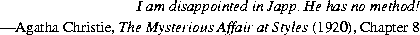

java.lang.ObjectObject is the single root of the class hierarchy. All objects, including
arrays, implement the methods of this class.
public classObject{ public final ClassgetClass(); public StringtoString(); public booleanequals(Object obj); public inthashCode(); protected Objectclone() throws CloneNotSupportedException; public final voidwait()
throws IllegalMonitorStateException,
InterruptedException; public final voidwait(long millis)
throws IllegalMonitorStateException,
InterruptedException; public final voidwait(long millis, int nanos)
throws IllegalMonitorStateException, InterruptedException; public final voidnotify() throws IllegalMonitorStateException; public final voidnotifyAll() throws IllegalMonitorStateException; protected voidfinalize()
throws Throwable; }
20.1.1 public final Class
getClass()
This method returns a reference to the unique object of type Class (§20.3) that
represents the class of this object. That Class object is the object that is locked by
static synchronized methods of the represented class.
20.1.2 public String
toString()
The general contract of toString is that it returns a string that "textually represents"
this object. The idea is to provide a concise but informative representation
that will be useful to a person reading it.
The toString method defined by class Object returns a string consisting of the name of the class of which the object is an instance, a commercial at character '@', and the unsigned hexadecimal representation of the hashcode of the object. In other words, this method returns a string equal to the value of:
getClass().getName() +Overridden by'@'+ Integer.toHexString(hashCode())
Class (§20.3), Boolean (§20.4), Character (§20.5), Integer (§20.7), Long (§20.8), Float (§20.9), Double (§20.10), String (§20.12), StringBuffer (§20.13), Thread (§20.20), ThreadGroup (§20.21), Throwable (§20.22.4), and Bitset (§21.2).20.1.3 public boolean
equals(Object obj)
This method indicates whether some other object is "equal to" this one.
The general contract of equals is that it implements an equivalence relation:
x, x.equals(x) should return true.
x and y, x.equals(y) should return true if and only if y.equals(x) returns true.
x, y, and z, if x.equals(y) returns true and y.equals(z) returns true, then x.equals(z) should return true.
x and y, multiple invocations of x.equals(y) consistently return true or consistently return false, provided no information used by x and y in equals comparisons is modified.
x, x.equals(null) should return false.
equals method defined by class Object implements the most discriminating possible equivalence relation on objects; that is, for any reference values x and y, ((Object)x).equals(y) returns true if and only if x and y refer to the same object.
Overridden by Boolean (§20.4), Character (§20.5), Integer (§20.7), Long (§20.8), Float (§20.9), Double (§20.10), String (§20.12), and Bitset (§21.2).
20.1.4 public int
hashCode()
This method is supported principally for the benefit of hash tables such as those
provided by the Java library class java.util.Hashtable (§21.5).
The general contract of hashCode is as follows:
hashCode must consistently return the same integer. The integer may be positive, negative, or zero. This integer does not, however, have to remain consistent from one Java application to another, or from one execution of an application to another execution of the same application.
equals method (§20.1.3), then calling the hashCode method on each of the two objects must produce the same integer result.
equals method (§20.1.3), then calling the hashCode method on each of the two objects must produce distinct integer results. However, the programmer should be aware that producing distinct integer results for unequal objects may improve the performance of hashtables.
hashCode method defined by class Object does return distinct integers for distinct objects. (This is typically implemented by converting the internal address of the object into an integer, but this implementation technique is not required by the Java language.)
Overridden by Boolean (§20.4), Character (§20.5), Integer (§20.7), Long (§20.8), Float (§20.9), Double (§20.10), String (§20.12), and Bitset (§21.2).
20.1.5 protected Object
clone()
throws CloneNotSupportedException
The general contract of clone is that it creates and returns a copy of this object.
The precise meaning of "copy" may depend on the class of the object. The general
intent is that, for any object x, the expression:
x.clone() != xwill be
true, and that the expression:
x.clone.getClass() == x.getClass()will be
true, but these are not absolute requirements. While it is typically the case
that:
x.clone.equals(x)will be
true, this is not an absolute requirement. Copying an object will typically
entail creating a new instance of its class, but it also may require copying of internal
data structures as well.
The method clone for class Object performs a specific cloning operation. First, if the class of this object does not implement the interface Cloneable, then a CloneNotSupportedException is thrown. Note that all arrays are considered to implement the interface Cloneable. Otherwise, this method creates a new instance of the class of this object and initializes all its fields with exactly the contents of the corresponding fields of this object, as if by assignment; the contents of the fields are not themselves cloned. Thus, this method performs a "shallow copy" of this object, not a "deep copy" operation.
The class Object does not itself implement the interface Cloneable, so calling the clone method on an object whose class is Object will result in throwing an exception at run time. The clone method is implemented by the class Object as a convenient, general utility for subclasses that implement the interface Cloneable, possibly also overriding the clone method, in which case the overriding definition can refer to this utility definition by the call:
super.clone()
20.1.6 public final void
wait()
throws IllegalMonitorStateException, InterruptedException
This method causes the current thread to wait until some other thread invokes the
notify method (§20.1.9) or the notifyAll method (§20.1.10) for this object.
In other words, this method behaves exactly as if it simply performs the call wait(0) (§20.1.7).
20.1.7 public final void
wait(long millis)
throws IllegalMonitorStateException, InterruptedException
This method causes the current thread to wait until either some other thread
invokes the notify method (§20.1.9) or the notifyAll method (§20.1.10) for
this object, or a certain amount of real time has elapsed.
This method may be called only when the current thread is already synchronized on this object. If the current thread does not own the lock on this object, an IllegalMonitorStateException is thrown.
This method causes the current thread (call it T) to place itself in the wait set (§17.14) for this object and then to relinquish any and all synchronization claims on this object. Thread T becomes disabled for thread scheduling purposes and lies dormant until one of four things happens:
notify method for this object and thread T happens to be arbitrarily chosen as the thread to be awakened.
notifyAll method for this object.
millis. If millis is zero, however, then real time is not taken into consideration and the thread simply waits until notified.
wait method was invoked. Thread T then
returns from the invocation of the wait method. Thus, on return from the wait
method, the synchronization state of the object and of thread T is exactly as it was
when the wait method was invoked.
If the current thread is interrupted (§20.20.31) by another thread while it is waiting, then an InterruptedException is thrown. This exception is not thrown until the lock status of this object has been restored as described above.
Note that the wait method, as it places the current thread into the wait set for this object, unlocks only this object; any other objects on which the current thread may be synchronized remain locked while the thread waits.
20.1.8 public final void
wait(long millis, int nanos)
throws IllegalMonitorStateException, InterruptedException
This method causes the current thread to wait until either some other thread
invokes the notify method (§20.1.9) or the notifyAll method (§20.1.10) for
this object, or some other thread interrupts the current thread, or a certain amount
of real time has elapsed.
The amount of real time, measured in nanoseconds, is given by:
1000000*millis+nanos
wait of one
argument (§20.1.7). In particular, wait(0, 0) means the same thing as wait(0).
20.1.9 public final void
notify()
throws IllegalMonitorStateException
If any threads are waiting (§20.1.7) on this object, one of them is chosen to be awakened. The choice is arbitrary and at the discretion of the implementation.
The notify method may be called only when the current thread is already synchronized on this object. If the current thread does not own the lock on this object, an IllegalMonitorStateException is thrown.
The awakened thread will not be able to proceed until the current thread relinquishes the lock on this object. The awakened thread will compete in the usual manner with any other threads that might be actively competing to synchronize on this object; for example, the awakened thread enjoys no reliable privilege or disadvantage in being the next thread to lock this object.
20.1.10 public final void
notifyAll()
throws IllegalMonitorStateException
All the threads waiting (§20.1.7) on this object are awakened.
The notifyAll method may be called only when the current thread is already synchronized on this object. If the current thread does not own the lock on this object, an IllegalMonitorStateException is thrown.
The awakened threads will not be able to proceed until the current thread relinquishes the lock on this object. The awakened threads will compete in the usual manner with any other threads that might be actively competing to synchronize on this object; for example, the awakened threads enjoy no reliable privilege or disadvantage in being the next thread to lock this object.
20.1.11 protected void
finalize() throws Throwable
The general contract of finalize is that it is invoked if and when the Java Virtual
Machine has determined that there is no longer any means by which this object
can be accessed by any thread that has not yet died (§12.7), except as a result of an
action taken by the finalization of some other object or class which is ready to be
finalized. The finalize method may take any action, including making this
object available again to other threads; the usual purpose of finalize, however,
is to perform cleanup actions before the object is irrevocably discarded. For example,
the finalize method for an object that represents an input/output connection
might perform explicit I/O transactions to break the connection before the object
is permanently discarded.
The finalize method of class Object performs no special action; it simply returns normally. Subclasses of Object may override this definition.
Java does not guarantee which thread will invoke the finalize method for any given object. It is guaranteed, however, that the thread that invokes finalize will not be holding any user-visible synchronization locks when finalize is invoked. If an uncaught exception is thrown by the finalize method, the exception is ignored and finalization of that object terminates.
After the finalize method has been invoked for an object, no further action is taken until the Java Virtual Machine has again determined that there is no longer any means by which this object can be accessed by any thread that has not yet died, including possible actions by other objects or classes which are ready to be finalized, at which point the object may be discarded.
The finalize method is never invoked more than once by a Java Virtual Machine for any given object.
java.lang.CloneableCloneable interface should be implemented by any class that is intended to
support or override the method clone (§20.1.5).
public interface Cloneable { }
The interface Cloneable declares no methods.
Contents | Prev | Next | Index
Java Language Specification (HTML generated by Suzette Pelouch on February 24, 1998)
Copyright © 1996 Sun Microsystems, Inc.
All rights reserved
Please send any comments or corrections to doug.kramer@sun.com